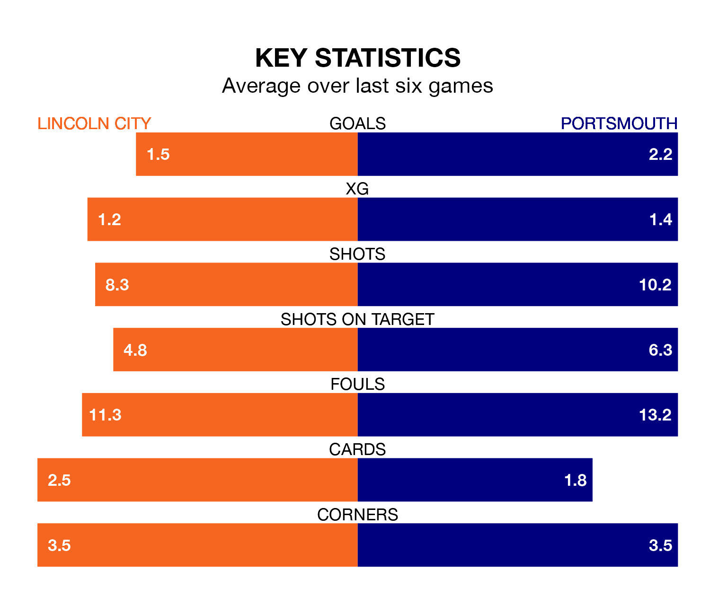

Portsmouth travel to the LNER Stadium for Saturday lunchtime's match against Lincoln City looking to bounce back from defeat last time out in EFL League One.
Pompey, who sit top of the league after 45 games, fell to a 2-1 home defeat to Wigan Athletic on April 20.
They face a Lincoln side who picked up a win in their last match, a 2-1 victory against Cheltenham Town, and who sit sixth in the table.
With Lukas Jensen between the sticks, Lincoln can rely on one of the league's safest pair of hands. He has kept 19 clean sheets in his 44 appearances this season, and no 'keeper has prevented the opposition scoring more often in EFL League One.
In Portsmouth's net, Will Norris has 18 clean sheets in 45 games. He has conceded a goal every 107 minutes, 10% more often than the 120 minutes between goals for Jensen.
With 76 goals in 45 games so far this season, Pompey are scoring more than average in the league with 1.7 goals per game. And they are conceding fewer than average, letting in 41 goals at a rate of 0.9 per game.
City are also above average scorers, with 1.4 goals per game, compared to a league average of 1.3. They have conceded 0.8 goals per game.
In the last 10 years, Lincoln and Portsmouth have played each other on nine occasions. Lincoln won one of them, Portsmouth six, and they drew twice.
On average, the Imps scored 0.6 goals and Pompey 1.6 in those matches.
Their last meeting was on September 23, when Portsmouth won 2-1 at home.
The Imps are in good form in EFL League One, with four wins and a draw from their last six games.
With three wins and two draws over that period, the visitors' form is slightly worse – they have taken 11 points from 18, compared to the home side's 13.
Updated: 07:59 (UTC), 26/04/24